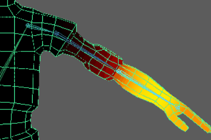
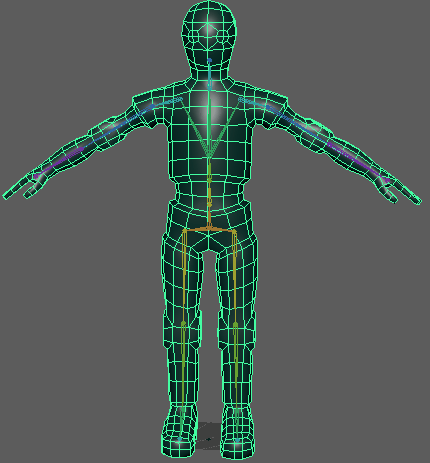
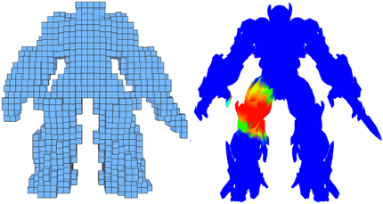
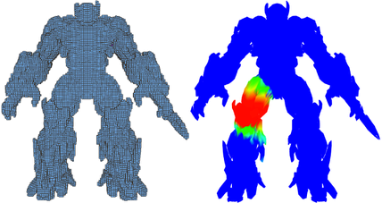

在“绑定”(Rigging)菜单集中选择 >  ，以打开“绑定蒙皮选项”(Bind Skin Options)窗口。
，以打开“绑定蒙皮选项”(Bind Skin Options)窗口。
- 绑定到(Bind To)
-
指定是绑定到整个骨架还是仅绑定到选定关节。从下列选项中进行选择：
- 关节层级(Joint Hierarchy)
-
指定选定可变形对象将被绑定到从根关节到以下骨架层次的整个骨架，即使选择了某些关节而不是根关节。绑定整个关节层次是绑定角色蒙皮的常用方法。
这是默认设置。
- 选定关节(Selected Joints)
-
指定选定可变形对象将仅绑定到选定关节，而不是整个骨架。
- 对象层次(Object Hierarchy)
-
指定选定可变形几何体被绑定到选定关节或非关节变换节点的整个层次，从顶部节点到整个节点层次。如果节点层次中存在任何关节，它们也被包含在绑定中。通过该选项，可以绑定完整的几何体片到节点，如组或定位器。
注： 使用“对象层级”(Object Hierarchy)选项时，可以仅选择无法蒙皮的关节或对象（例如，组节点或定位器，而不是几何体片）作为绑定中的初始影响。
- 绑定方法(Bind Method)
-
指定初始蒙皮期间关节如何影响邻近蒙皮点。另请参见平滑蒙皮的绑定方法。从下列选项中进行选择：
下图使用绘制蒙皮权重工具，比较四种不同绑定方法下指定给角色左臂关节的默认权重的效果。亮黄色表示绑定效果最强的区域，黑色表示不受影响的区域。“最近距离”(Closest Distance)和“在层级中最近”(Closest In Hierarchy)具有类似的效果，“热量贴图”(Heat Map)和“测地线体素”(Geodesic Voxel)显示关节处的绑定效果更强。若要执行此类比较，请参见使用“绘制蒙皮权重”(Paint Skin Weights)工具测试蒙皮绑定。
- 最近距离(Closest Distance)
-
指定关节影响仅基于与蒙皮点的近似。当绑定蒙皮时，Maya 会忽略骨架层次。
在角色设置中，该方法可能会导致不恰当的关节影响，如右大腿关节影响左大腿上的邻近蒙皮点。
- 在层级中最近(Closest In Hierarchy)
-
指定关节影响是基于骨架层次。这是默认设置。
在角色设置中，此方法可以防止不恰当的关节影响。例如，该方法可避免致右大腿关节影响左大腿上的邻近蒙皮点。
- 热量贴图(Heat Map)
-
使用热量扩散技术分发影响权重。基于网格中的每个影响对象设定初始权重，该网格用作热量源，并在周边网格发射权重值。较高（较热）权重值最接近关节，向远离对象的方向移动时会降为较低（较冷）的值。
- 测地线体素(Geodesic Voxel)
-
使用网格的体素表示帮助计算影响权重。另请参见测地线体素绑定。
旧版绑定方法会产生瑕疵，热量贴图绑定通常在实际网格上会失败，“测地线体素”(Geodesic Voxel)绑定方法通过使用体素化的角色表示、计算绑定权重，然后将生成的权重应用到现有封闭式蒙皮方法，并使角色的几何体变形，解决了这些问题。
- 蒙皮方法(Skinning Method)
-
指定要用于选定可变形对象的蒙皮方法。有关详细信息，另请参见平滑蒙皮方法。
- 经典线性(Classic Linear)
-
将对象设定为使用经典线性蒙皮。如果希望使用基本平滑蒙皮变形效果，请使用该模式，产生的效果与 Maya 先前版本中的效果一致。该模式允许产生体积收缩和收拢变形效果。
如果将网格设定为线性蒙皮，那么在受到轴上扭曲关节影响的区域会产生体积丢失。
- 双四元数(Dual Quaternion)
-
将对象设定为使用双四元数蒙皮。如果希望在绕扭曲关节变形时保持网格中的体积，请使用该方法。
如果将网格设定为使用双四元数蒙皮，将保持体积，即使该体积受到轴上扭曲关节的影响。
- 权重已融合(Weight Blended)
-
将对象设定为经典线性和双四元数的融合蒙皮，该融合蒙皮基于您绘制的逐顶点权重贴图。请参见融合平滑蒙皮方法。
- 归一化权重(Normalize Weights)
-
该下拉列表用于设定平滑蒙皮权重归一化的方式。这些选项可帮助避免无意中在归一化过程中为多个顶点设定小权重值的情况。
从下列选项中进行选择：
- 交互式(Interactive)
-
启用后，Maya 会在您添加或移除影响以及绘制蒙皮权重时归一化蒙皮权重值。（这是默认设置。）
工作时，Maya 会向其他影响物中添加或从其他影响物中移除权重，从而使所有影响物上的总权重合计为 1.0。可以在 skinCluster 节点 weightList 属性上查看用于变形的精确权重。
例如，如果将权重从 1.0 更改为 0.5，则 Maya 将在邻近影响之中分配剩余的 0.5。该模式复制了 Maya 先前版本中的归一化过程。
如果需要，使用权重分布(Weight Distribution)设置来确定 Maya 在规一化过程中创建新权重的方式。
- 无(None)
-
禁用平滑蒙皮权重归一化。
重要： 请注意，通过该选项可以创建大于或小于 1 的权重，从而在执行角色时允许古怪或不正确的变形。 - 加速(Post)
-
启用时，Maya 会在您变形网格时计算归一化的蒙皮权重值，防止任何古怪或不正确变形。网格上未存储任何规一化权重值，这使您可以继续绘制权重或调整交互式绑定操纵器，而不会让规一化过程更改先前的蒙皮权重操作。
选择该模式时，您可以在不干扰其他影响权重的情况下绘制或更改权重，并且在变形网格时仍然可以进行蒙皮的归一化。
注： 由于 Maya 在变形时动态计算归一化权重值，因此您无法查看 skinCluster 节点 weightList 属性中的归一化值。网格将使用归一化值进行变形，但 skinCluster 节点的实际权重值可能会增加到大于或小于 1。如果使用交互式蒙皮绑定，将为您自动选定该模式。（请参见平滑蒙皮的交互式绑定。） 因此，对于交互式绑定，在变形网格之前不会归一化权重。
有关蒙皮权重规一化的详细信息，请参见平滑蒙皮权重规一化和设置规一化模式和规一化权重。
- 权重分布(Weight Distribution)
-
仅当“规一化权重”(Normalize Weights)模式设置为“交互式”(Interactive)时可用。
在使用“交互式”(Interactive)规一化模式绘制权重时，Maya 在每个笔划后重新规一化权重值，缩放可用的权重（已具有某些值且未锁定的权重），从而使顶点权重合计仍为 1.0。如果可能，权重将基于现有值进行缩放。
在其他所有权重都未锁定的情况下，可用权重都为零，此设置可用来确定 Maya 如何在归一化期间创建新权重。
注： 在组件编辑器(Component Editor)中更改权重时，也可以应用此设置。从下列选项中选择：
- 距离(Distance)
-
基于蒙皮到的各影响的顶点的距离计算新权重。距离越近的关节获得的权重越高。（这是默认设置。）
- 相邻(Neighbors)
-
基于影响周围顶点的影响计算新权重。这可以防止顶点为骨架中的每个关节获得权重，并为其指定与周围顶点相似的权重。仅支持多边形网格。
- 允许多种绑定姿势(Allow Multiple Bind Poses)
-
允许您设定是否允许每个骨架的多个绑定姿势。如果正绑定几何体的多个片到同一骨架，该选项非常有用。
启用后，可以使用不同绑定姿势绑定单独片。禁用后，必须绑定带骨架的所有几何体片为同一绑定姿势。
- 最大影响(Max Influences)
-
指定可影响平滑蒙皮几何体上每个蒙皮点的关节数量。默认值为 5，这将为大多数角色生成良好的平滑蒙皮结果。还可以指定“衰减速率”(Dropoff/Falloff Rate)来限制关节影响物的范围。
- 保持最大影响物(Maintain Max Influences)
-
启用后，任何时候平滑蒙皮几何体的影响物数量都不得大于“最大影响物”(Max Influences)指定的值。
例如，如果“最大影响物”(Max Influences)设置为 3，然后您为第四个关节绘制或设置权重，则会将其他三个关节其中一个的权重设置为 0，以保持由“最大影响物”(Max Influences)指定的加权影响物总数量。
该功能将权重的再分布限制于特定数目的影响，同时确保主关节是权重的接收关节。
注： 如果在“属性编辑器”(Attribute Editor)中启用“保持最大影响物”(Maintain Max Influences)，在单击“更新权重”(Update Weights)来重新指定权重之前，将不会修改蒙皮权重。 - 移除未使用的影响(Remove Unused Influences)
-
启用后，会接收零权重的加权影响将不会被包含在绑定中。当希望减少场景的计算数以增加播放速度，该选项非常有用。
注： “优化场景大小选项”(Optimize Scene Size Options)还允许您从角色的蒙皮绑定移除任何零加权影响物。可以启用“移除未使用项目”(Remove Unused)区域的“未使用的蒙皮影响物”(Unused Skin Influences)。 - 为骨架上色(Colorize Skeleton)
-
启用后，为绑定骨架及其蒙皮顶点上色，以便顶点显示与影响它们的关节和骨骼相同的颜色。
注： 可以从窗口更改单个关节和骨骼的颜色。 - 热量贴图衰减(Heatmap falloff)
-
注： “热量贴图衰减”(Heatmap Falloff)参数仅针对“热量贴图”(Heatmap)绑定方法显示。而“在层级中最近”(Closest in Hierarchy)和“最近距离”(Closest Distance)绑定方法具有“衰减”(Dropoff)参数。
选择平滑蒙皮的热量贴图方法时，控制权重围绕选定关节的衰减。这可以帮助减少热量贴图绑定期间小权重跨网格扩散的量。
默认情况下，“热量贴图衰减”(Heatmap falloff)设置为 0.68，可提供更好的总权重。接近 0 的值可以生成平滑的结果，但可以使小权重在网格曲面的远处扩散。值越接近 1，生成的衰减就越尖锐，这会保持权重更接近影响对象，从而限制小权重的扩散。
在以下示例中，请仔细观察角色的肘部关节，查看从低设置 0 到最高值 10 的衰减变化。衰减值越高，对肘部关节的约束效果越严格。此示例使用绘制蒙皮权重的颜色渐变来说明绑定效果。若要自行尝试此操作，请参见使用“绘制蒙皮权重”(Paint Skin Weights)工具测试蒙皮绑定。 - 在创建时包含隐藏的选择(Include hidden selections on creation)
- 打开该选项使绑定包含不可见的几何体，因为默认情况下，绑定方法必须具有可见的几何体才能成功完成绑定。但是，有时几何体不可见，您仍希望绑定成功，而不管网格的可见性状态如何。
为了避免向后兼容性问题，我们添加了一个显式选项以包括在绑定过程中隐藏的几何体。
- “衰减速率”(Dropoff Rate)
-
（仅当“绑定方法”(Bind Method)设置为“在层级中最近”(Closest in Hierarchy)或“最近距离”(Closest Distance)时可用）。
每个关节对特定点的影响根据蒙皮点和关节之间的距离不同而变化。
该选项用于指定蒙皮点上每个关节的影响随其与该关节（和关节的骨骼）距离变化而降低的程度。“衰减速率”(Dropoff Rate)越大，影响随距离变化而降低的速度就越快。“衰减速率”(Dropoff Rate)越小，每个关节的影响越远。使用滑块来指定在 0.1 和 10 之间的值。可以输入最大为 100 的值，但 0.1 到 10 的值最适合于大部分情况。默认值为 4，这为大多数角色提供了良好的变形效果。
下图使用绘制蒙皮权重(Paint Skin Weights)工具来对比高低衰减设置的效果，其中白色区域显示绑定影响的强度。低衰减速率对蒙皮的影响很小，而高衰减速率则会对蒙皮施加更大的力。衰减速率较低 (0.1) 的网格
衰减速率较高 (10.0) 的网格
注： 如果关节有一个骨骼，那么关节的影响会沿整个骨骼延伸，从关节的中心到骨骼的末端。关节的影响可以延伸到骨骼的整个长度附近的所有点。如果关节是末关节（没有任何骨骼），那么关节的影响仅会从关节的中心向前延伸。绑定蒙皮后，可以使用“绘制蒙皮权重工具”(Paint Skin Weights Tool)，以直观方式编辑关节的影响。有关详细信息，请参见绘制平滑蒙皮点权重。
- 衰减(Falloff)
-
仅可用于测地线体素绑定（当“绑定方法”(Bind Method)设置为“测地线体素”(Geodesic Voxel)时）。
控制应用到几何体的绑定的刚性程度。值 1 可创建更加刚性的绑定，而值 0 会生成更加平滑的绑定。（默认值为 0.2）
- 解决方案(Resolution)
-
仅当“绑定方法”(Bind Method)设置为“测地线体素”(Geodesic Voxel)时可用。
增加体素化的精度。Maya 将基于已体素化的量计算权重。根据分辨率，网格各部分可能会连接在体素空间中，这可能导致出现绑定瑕疵（类似于“最近距离”(Closest Distance)或“在层级中最近”(Closest in Hierarchy)方法中发生的瑕疵）。
下图显示以两种不同分辨率体素化的网格。在第一幅图中，由于已选定粗糙分辨率，膝盖和手的体素会连接在一起。这会导致膝盖几何体在执行手臂运动等操作时发生变形。
如果分辨率更精细（请参见下文），手和腿会保持独立，产生更高质量的绑定。
提示： 选择正确的分辨率就是在绑定时间和质量之间做出取舍。最好在开始时使用粗糙（低）体素化分辨率，然后根据需要增加分辨率值。 - 验证体素状态(Validate voxel state)
-
仅当“绑定方法”(Bind Method)设置为“测地线体素”(Geodesic Voxel)时可用。
启用时，会对体素执行后期验证。默认情况下已激活，您可以将其禁用，因为这不是必需的操作，而且会延长处理时间。但是，对更加复杂的几何体来说，这可能会是一个很有用的诊断工具。另请参见退化几何体。
- 变形器节点(Deformer Node)
-
“变形器节点”(Deformer Node)菜单可用于选择用于蒙皮绑定的过程。在“蒙皮簇”(Skin Cluster)和“接近度包裹”(Proximity Wrap)之间选择。
- 蒙皮簇(Skin Cluster)
- 蒙皮簇使用“传统蒙皮绑定”方法。
注： 如果在几何体上添加第二个蒙皮簇，将显示一个对话框，要求您确认使用多个蒙皮簇。
- 有关详细信息，请参见管理多个蒙皮簇。
- 接近度包裹(Proximity Wrap)
- “接近度包裹”(Proximity Wrap)使用变形器，使用“接近度包裹”(Proximity Wrap)变形器选项中的“衰减速率比例”(Dropoff Rate Scale)设置执行相同的蒙皮绑定。通过更改“衰减速率比例”(Dropoff Rate Scale)值，您可以控制来自驱动者的反向距离权重。